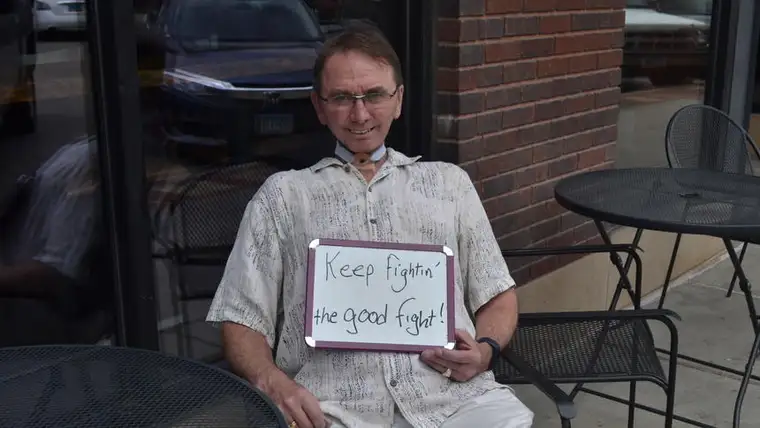
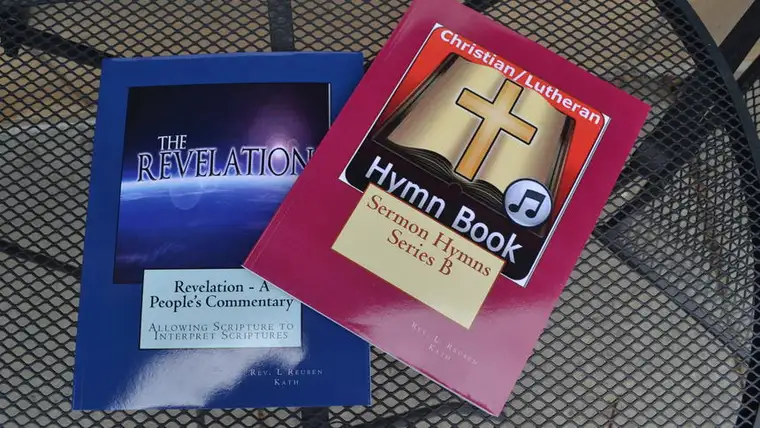

FARGO — It’s been nearly 15 years since the Rev. Lyle Kath learned his swollen glands indicated he had esophageal cancer.
Though the necessary treatment changed his life dramatically — he can no longer eat food except through a tube inserted into his stomach, can’t drink and no longer speaks — it’s also brought many fruits, including five published books and a profusion of preaching, albeit unconventional.
“I still love to preach and visit shut-ins,” he wrote on a small whiteboard at our recent interview, just after playing a pre-recorded greeting on an iPad, voiced through a small, attached speaker.
“I feel I receive more from them than what I am giving,” he says of the congregants from Immanuel Lutheran Church in Wahpeton, N.D., whom he visits, either in a nursing home or their residences.
These souls, he says, remind him everyone has problems. “I admire their inner strength and faith, and I just enjoy talking ‘life’ with them.”
But it’s when he sits down to write that his soul seems to take flight.
“He’s always been a tenacious person, and he’s funneled that into the books,” says his wife, Jody. “If he can’t do something physically, he’s going to do it some way; it’s just in his nature.”
His latest two books demonstrate two of his greatest passions — Scripture and song.

“The Revelation: A People’s Commentary” offers an interpretation of one of the most controversial books of the Bible, Revelation. “I cross-reference from other parts of the Bible to help with validity of the symbolism,” he explains.
The other, “Christian/Lutheran Hymn Book (Series B),” is a collection of tried and true hymns, to which Kath offers a refreshing twist with new lyrics based on Sunday Scripture readings.
Kath revives an old quote from Martin Luther: “Next to the Word of God, music deserves the highest praise,” adding in his own words, “Music is God’s second greatest gift to us.”
Gary Thies, who directs one of the largest mission efforts of the Lutheran Church’s Missouri Synod, met Kath when Kath invited him to his former church, St. Martin’s Lutheran Church in Winona, Minn., to speak about his work.
“I could tell immediately he was not normal, and that’s the only kind of people I want to work with,” says Thies, who runs an organization of 90 volunteers out of a set of old farm buildings in the hills of western Iowa.
“We became close friends, and then the cancer problem arrived, and I thought to myself, ‘How could a man who was so gifted and have such a wonderful voice have that taken from him?'” Thies recalls. “I just have so much respect for this man who has never wavered in his faith, and even in his position, he continues to serve the Lord Jesus.”
Every day, Kath writes a new devotional for the organization’s website to encourage the workers. “He’s carried a special load,” Thies says. “A lot of ‘normal’ people would have thrown up their hands and said, ‘I’m done. I can’t preach anymore. I can’t carry on more work.’ But Pastor Kath didn’t do that.”
Thies continues, “I think Pastor Kath realizes that the Lord tests those that he loves, and that testing makes a person strong; it fires their faith, and that’s what happened to Pastor Lyle Kath.”
In past years, Kath has been active in the ministry at Immanuel Lutheran, work that recently was made official through a call to serve as associate pastor.
“He was doing so much pastoral work in our congregation; we’re now giving him the full backing of the congregation,” says the Rev. Matthew Tooman, who will co-pastor with Kath. “He knows the Bible well and is able to communicate that despite the obvious challenge he has.”
Kath’s drive, Tooman says, is admirable. “I think he wants to expend himself through the ministry. He doesn’t want to leave anything undone; he wants to put it all on the field and have nothing left.”
In doing so, he adds, Kath fulfills Romans 10:10 that says, in essence: “Faith comes through hearing, and hearing is preached.”
“He shows that God is at work through him,” Tooman says, noting that when talking to Kath, “you increase your attentiveness,” and in that way, “he is used by the Lord for his purpose.”
“We live in perilous times, as did the first-century Christians,” Kath remarks, noting that his book, “Revelation,” is especially intended to bring peace and comfort to the reader. “I try to use the gifts God’s given me in a wise, winsome way.”
Salonen is a freelance writer who lives in Fargo with her husband and five children. Email her at roxanebsalonen//roxanesalonen.com/.
Buy a book
Lyle Kath’s books can be purchased at Melberg’s Christian Bookstore in Moorhead, Hurley’s Religious Books in Fargo or online through Amazon, Barnes & Noble or Kath’s website, www.pastorlylekath.com.
[For the sake of having a repository for my newspaper columns and articles, I reprint them here, with permission, a week after their run date. The preceding ran in The Forum newspaper on June 9, 2018.]